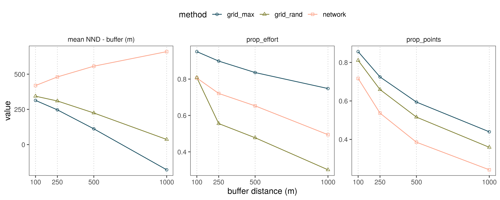

Section 9 Supplementary material
9.1 Distance to roads
9.1.1 Prepare libraries
# load libraries
library(reticulate)
library(sf)
library(dplyr)
library(scales)
library(readr)
library(purrr)
library(ggplot2)
library(ggthemes)
library(ggspatial)
library(scico)
# round any function
round_any <- function(x, accuracy = 20000){round(x/accuracy)*accuracy}
# ci function
ci <- function(x){qnorm(0.975)*sd(x, na.rm = TRUE)/sqrt(length(x))}
# set python path
use_python("/usr/bin/python3")Importing python libraries.
# import classic python libs
import itertools
from operator import itemgetter
import numpy as np
import matplotlib.pyplot as plt
import math
# libs for dataframes
import pandas as pd
# import libs for geodata
from shapely.ops import nearest_points
import geopandas as gpd
import rasterio
# import ckdtree
from scipy.spatial import cKDTree
from shapely.geometry import Point, MultiPoint, LineString, MultiLineString9.1.2 Prepare data for processing
# read in roads shapefile
roads = gpd.read_file("data/spatial/roads_studysite_2019/roads_studysite_2019.shp")
roads.head()
# read in checklist covariates for conversion to gpd
# get unique coordinates, assign them to the df
# convert df to geo-df
chkCovars = pd.read_csv("data/eBirdChecklistVars.csv")
unique_locs = chkCovars.drop_duplicates(subset=['longitude','latitude'])[['longitude', 'latitude']]
unique_locs['coordId'] = np.arange(1, unique_locs.shape[0]+1)
chkCovars = chkCovars.merge(unique_locs, on=['longitude', 'latitude'])
unique_locs = gpd.GeoDataFrame(
unique_locs,
geometry=gpd.points_from_xy(unique_locs.longitude, unique_locs.latitude))
unique_locs.crs = {'init' :'epsg:4326'}
# reproject spatials to 43n epsg 32643
roads = roads.to_crs({'init': 'epsg:32643'})
unique_locs = unique_locs.to_crs({'init': 'epsg:32643'})
# function to simplify multilinestrings
def simplify_roads(complex_roads):
simpleRoads = []
for i in range(len(complex_roads.geometry)):
feature = complex_roads.geometry.iloc[i]
if feature.geom_type == "LineString":
simpleRoads.append(feature)
elif feature.geom_type == "MultiLineString":
for road_level2 in feature:
simpleRoads.append(road_level2)
return simpleRoads
# function to use ckdtrees for nearest point finding
def ckdnearest(gdfA, gdfB):
A = np.concatenate(
[np.array(geom.coords) for geom in gdfA.geometry.to_list()])
simplified_features = simplify_roads(gdfB)
B = [np.array(geom.coords) for geom in simplified_features]
B = np.concatenate(B)
ckd_tree = cKDTree(B)
dist, idx = ckd_tree.query(A, k=1)
return dist
# function to use ckdtrees for nearest point finding
def ckdnearest_point(gdfA, gdfB):
A = np.concatenate(
[np.array(geom.coords) for geom in gdfA.geometry.to_list()])
#simplified_features = simplify_roads(gdfB)
B = np.concatenate(
[np.array(geom.coords) for geom in gdfB.geometry.to_list()])
#B = np.concatenate(B)
ckd_tree = cKDTree(B)
dist, idx = ckd_tree.query(A, k=[2])
return dist
# get distance to nearest road
unique_locs['dist_road'] = ckdnearest(unique_locs, roads)
# get distance to nearest other site
unique_locs['nnb'] = ckdnearest_point(unique_locs, unique_locs)
# write to file
unique_locs = pd.DataFrame(unique_locs.drop(columns='geometry'))
unique_locs['dist_road'] = unique_locs['dist_road']
unique_locs['nnb'] = unique_locs['nnb']
unique_locs.to_csv(path_or_buf="data/locs_dist_to_road.csv", index=False)
# merge unique locs with chkCovars
chkCovars = chkCovars.merge(unique_locs, on=['latitude', 'longitude', 'coordId'])9.1.3 Species specific nearest sites
# split data by species
datalist = [pd.DataFrame(y) for x, y in data.groupby('scientific_name', as_index=False)]
# function to get unique vals anc convert to gpd
def convData(somedata):
somedata = somedata.drop_duplicates(subset=['longitude','latitude'])[['longitude', 'latitude', 'scientific_name']]
unique_locs = gpd.GeoDataFrame(somedata,
geometry=gpd.points_from_xy(somedata.longitude,
somedata.latitude))
unique_locs.crs = {'init' :'epsg:4326'}
unique_locs = unique_locs.to_crs({'init': 'epsg:32643'})
dists = ckdnearest_point(unique_locs, unique_locs)
unique_locs = pd.DataFrame(unique_locs.drop(columns='geometry'))
unique_locs['nnb'] = dists
return unique_locs
# apply function to datalist
datalist = list(map(convData, datalist))9.1.4 Explicit spatial filter
# extract data from python
chkCovars <- py$chkCovars
chkCovars <- st_as_sf(chkCovars, coords = c("longitude", "latitude")) %>%
`st_crs<-`(4326) %>%
st_transform(32643)
# read wg
wg <- st_read("data/spatial/hillsShapefile/Nil_Ana_Pal.shp") %>%
st_transform(32643)
# spatial subset
chkCovars <- chkCovars %>%
mutate(id = 1:nrow(.)) %>%
filter(id %in% unlist(st_contains(wg, chkCovars)))9.1.5 Species specific filter
# extract values from python
sp_spec_data <- py$datalist
sp_spec_data <- map(sp_spec_data, function(df){
df <- as_tibble(df) %>%
st_as_sf(coords = c("longitude", "latitude")) %>%
`st_crs<-`(4326) %>%
st_transform(32643) %>%
mutate(id = 1:nrow(.)) %>%
filter(id %in% unlist(st_contains(wg, .))) %>%
st_drop_geometry()
})
sp_spec_data <- bind_rows(sp_spec_data)9.1.6 Plot histogram: distance to roads
# make histogram
hist_roads <- ggplot(chkCovars)+
geom_histogram(aes(dist_road / 1e3),
bins = 20, size=0.2, fill="steelblue")+
labs(x = "distance to roads (km)", y = "# checklists")+
scale_x_log10(label=label_number(accuracy = 0.1),
breaks = c(0.1, 1, 10))+
scale_y_continuous(label=label_number(scale=0.001, accuracy = 1, suffix = "K"))+
theme_few()+
theme(plot.background = element_rect(fill=NA, colour = 1),
panel.background = element_blank(),
panel.border = element_blank(), axis.line = element_blank())9.1.7 Table: Distance to roads
# write the mean and ci95 to file
chkCovars %>%
st_drop_geometry() %>%
select(dist_road, nnb) %>%
tidyr::pivot_longer(cols = c("dist_road", "nnb"),
names_to = "variable") %>%
group_by(variable) %>%
summarise_at(vars(value),
list(~mean(.), ~sd(.), ~min(.), ~max(.))) %>%
write_csv("data/results/distance_roads_sites.csv")| variable | mean | sd | min | max |
|---|---|---|---|---|
| dist_road | 389.7699 | 859.1526 | 0.2791282 | 7637.243 |
| nnb | 296.8934 | 552.9132 | 0.1367772 | 12849.668 |
9.1.8 Plot histogram: distance to nearest site
# get unique locations
locs <- py$unique_locs
# make histogram of nearest neighbours
hist_sites <-
ggplot(locs)+
geom_histogram(aes(nnb / 1e3),
bins = 100, size=0.2, fill="steelblue")+
labs(x = "dist. nearest site (km)", y = "# sites")+
# scale_x_log10(label=label_number(accuracy = 0.1),
# breaks = c(0.1, 1, 10))+
coord_cartesian(xlim=c(0,10))+
scale_y_continuous(label=label_number(scale=0.001, accuracy = 1, suffix = "K"))+
theme_few()+
theme(plot.background = element_rect(fill=NA, colour = 1),
panel.background = element_blank(),
panel.border = element_blank(), axis.line = element_blank())9.1.9 Plot species specific histograms: distance to nearest site
# plot histograms by species
hist_sites_sp <-
ggplot(sp_spec_data)+
geom_histogram(aes(nnb / 1e3),
bins = 100, size=0.2, fill="steelblue")+
labs(x = "dist. nearest site (km)", y = "# sites")+
# scale_x_log10(label=label_number(accuracy = 0.1),
# breaks = c(0.1, 1, 10))+
facet_wrap(~scientific_name)+
scale_x_log10()+
#coord_cartesian(xlim=c(0,10))+
scale_y_continuous(label=label_number(scale=0.001, accuracy = 1, suffix = "K"))+
theme_few()+
theme(plot.background = element_rect(fill=NA, colour = 1),
panel.background = element_blank(),
panel.border = element_blank(), axis.line = element_blank())
ggsave(hist_sites_sp, filename = "figs/fig_nnb_species.png")9.1.10 Table: Species specific nearest site
# write the mean and ci95 to file
sp_spec_data %>%
group_by(scientific_name) %>%
summarise_at(vars(nnb),
list(~mean(.), ~sd(.), ~ci(.), ~min(.), ~max(.))) %>%
write_csv("data/results/dist_nnb_species_specific.csv")# show table of distance to nearest site for each species
readr::read_csv("data/results/dist_nnb_species_specific.csv") %>%
knitr::kable()| scientific_name | mean | sd | ci | min | max |
|---|---|---|---|---|---|
| Alcippe poioicephala | 416.7076 | 808.0633 | 25.00732 | 0.1367772 | 16460.7 |
| Carpodacus erythrinus | 416.3566 | 807.9932 | 25.00515 | 0.1367772 | 16460.7 |
| Centropus sinensis | 416.8469 | 808.2412 | 25.01906 | 0.1367772 | 16460.7 |
| Chalcophaps indica | 416.6251 | 807.9633 | 25.00111 | 0.1367772 | 16460.7 |
| Chloropsis aurifrons | 417.2270 | 808.7698 | 25.02918 | 0.1367772 | 16460.7 |
| Chrysocolaptes guttacristatus | 416.6501 | 808.0689 | 25.00749 | 0.1367772 | 16460.7 |
| Cinnyris asiaticus | 416.7731 | 808.1539 | 25.01324 | 0.1367772 | 16460.7 |
| Copsychus fulicatus | 416.8469 | 808.2412 | 25.01906 | 0.1367772 | 16460.7 |
| Copsychus saularis | 416.6281 | 808.0744 | 25.00766 | 0.1367772 | 16460.7 |
| Culicicapa ceylonensis | 416.8469 | 808.2412 | 25.01906 | 0.1367772 | 16460.7 |
| Cyornis tickelliae | 416.7184 | 808.1772 | 25.01396 | 0.1367772 | 16460.7 |
| Dicaeum erythrorhynchos | 416.4383 | 807.8246 | 24.99370 | 0.1367772 | 16460.7 |
| Eumyias albicaudatus | 416.5625 | 808.0762 | 25.00772 | 0.1367772 | 16460.7 |
| Hierococcyx varius | 416.5075 | 807.9157 | 24.99964 | 0.1367772 | 16460.7 |
| Hypsipetes ganeesa | 416.9883 | 808.1900 | 25.01436 | 0.1367772 | 16460.7 |
| Iole indica | 417.5128 | 809.7107 | 25.05830 | 0.1367772 | 16460.7 |
| Irena puella | 416.7806 | 808.0570 | 25.00712 | 0.1367772 | 16460.7 |
| Lanius schach | 416.9222 | 808.0495 | 25.00689 | 0.1367772 | 16460.7 |
| Leptocoma minima | 416.7510 | 808.1632 | 25.01353 | 0.1367772 | 16460.7 |
| Leptocoma zeylonica | 416.8469 | 808.2412 | 25.01906 | 0.1367772 | 16460.7 |
| Motacilla maderaspatensis | 416.7644 | 808.1430 | 25.01290 | 0.1367772 | 16460.7 |
| Myophonus horsfieldii | 416.8469 | 808.2412 | 25.01906 | 0.1367772 | 16460.7 |
| Orthotomus sutorius | 416.7268 | 808.1720 | 25.01380 | 0.1367772 | 16460.7 |
| Parus cinereus | 416.7780 | 808.1521 | 25.01319 | 0.1367772 | 16460.7 |
| Passer domesticus | 416.8469 | 808.2412 | 25.01906 | 0.1367772 | 16460.7 |
| Pellorneum ruficeps | 416.8469 | 808.2412 | 25.01906 | 0.1367772 | 16460.7 |
| Pericrocotus cinnamomeus | 416.7935 | 808.1474 | 25.01304 | 0.1367772 | 16460.7 |
| Pericrocotus flammeus | 416.7258 | 808.1102 | 25.01189 | 0.1367772 | 16460.7 |
| Picus xanthopygaeus | 416.8469 | 808.2412 | 25.01906 | 0.1367772 | 16460.7 |
| Pomatorhinus horsfieldii | 416.8663 | 808.1413 | 25.01285 | 0.1367772 | 16460.7 |
| Psilopogon viridis | 416.8469 | 808.2412 | 25.01906 | 0.1367772 | 16460.7 |
| Psittacula columboides | 416.8469 | 808.2412 | 25.01906 | 0.1367772 | 16460.7 |
| Psittacula cyanocephala | 416.8469 | 808.2412 | 25.01906 | 0.1367772 | 16460.7 |
| Pycnonotus cafer | 416.9760 | 807.9851 | 25.00490 | 0.1367772 | 16460.7 |
| Pycnonotus jocosus | 416.7780 | 808.1521 | 25.01319 | 0.1367772 | 16460.7 |
| Saxicola caprata | 416.8469 | 808.2412 | 25.01906 | 0.1367772 | 16460.7 |
| Sitta frontalis | 417.1803 | 808.0823 | 25.00479 | 0.1367772 | 16460.7 |
| Streptopelia chinensis | 416.7387 | 808.1661 | 25.01362 | 0.1367772 | 16460.7 |
| Turdoides striata | 418.0558 | 810.0605 | 25.06913 | 0.1367772 | 16460.7 |
| Turdus simillimus | 416.8469 | 808.2412 | 25.01906 | 0.1367772 | 16460.7 |
| Upupa epops | 416.8469 | 808.2412 | 25.01906 | 0.1367772 | 16460.7 |
| Zosterops palpebrosus | 416.7707 | 808.1456 | 25.01298 | 0.1367772 | 16460.7 |
Histograms showing the species-specific distances to nearest neighbouring site.

9.1.11 Plot map: points on roads
roads <- st_read("data/spatial/roads_studysite_2019/roads_studysite_2019.shp") %>%
st_transform(32643)
points <- chkCovars %>%
bind_cols(as_tibble(st_coordinates(.))) %>%
st_drop_geometry() %>%
mutate(X = round_any(X, 2500), Y = round_any(Y, 2500))
points <- count(points, X,Y)
# add land
library(rnaturalearth)
land <- ne_countries(scale = 50, type = "countries", continent = "asia",
country = "india",
returnclass = c("sf")) %>%
st_transform(32643)
bbox <- st_bbox(wg)# plot on maps
ggplot()+
geom_sf(data = land, fill = "grey90", col = NA)+
geom_sf(data = wg, fill= NA, col = 1)+
annotation_custom(grob = hist_roads %>% ggplotGrob(),
xmin = bbox["xmax"] - (bbox["xmax"] - bbox["xmin"])/2.5,
xmax = bbox["xmax"],
ymin = bbox["ymax"] - (bbox["ymax"] - bbox["ymin"])/3,
ymax = bbox["ymax"])+
geom_tile(data=points, aes(X,Y,fill=n), col = "grey90")+
geom_sf(data=roads, size=0.2, col="steelblue")+
# scale_colour_manual(values = "steelblue", labels = "roads")+
scale_fill_scico(trans = "log10", palette = "lajolla", values=c(0, 1))+
annotation_north_arrow(location = "br", which_north = "true",
pad_x = unit(0.1, "in"), pad_y = unit(0.5, "in"),
style = north_arrow_fancy_orienteering) +
annotation_scale(location = "br", width_hint = 0.4, text_cex = 1) +
theme_few()+
theme(legend.position = c(0.9,0.55),
legend.background = element_blank(),
legend.key = element_rect(fill="grey90"),
axis.title = element_blank(),
panel.background = element_rect(fill="lightblue"))+
coord_sf(expand = FALSE, xlim = bbox[c("xmin", "xmax")], ylim = bbox[c("ymin", "ymax")])+
labs(fill = "checklists", colour=NULL)
# save figure
ggsave(filename = "figs/fig_distRoads.png", device = png())
dev.off()# transform points to utm
locs <- locs %>%
st_as_sf(coords=c("longitude", "latitude")) %>%
`st_crs<-`(4326) %>%
st_transform(32643)
# add nnb to locations
ggplot()+
geom_sf(data = land, fill = "grey90", col = NA)+
geom_sf(data = wg, fill= NA, col = 1)+
annotation_custom(grob = hist_sites %>% ggplotGrob(),
xmin = bbox["xmax"] - (bbox["xmax"] - bbox["xmin"])/2.5,
xmax = bbox["xmax"],
ymin = bbox["ymax"] - (bbox["ymax"] - bbox["ymin"])/3,
ymax = bbox["ymax"])+
geom_sf(data=roads, size=0.2, col="steelblue")+
geom_sf(data=locs, aes(col=nnb/1000))+
scale_colour_scico(palette = "oslo", values=c(0, 1), direction = -1, limits = c(0, 5),
na.value = "indianred")+
annotation_north_arrow(location = "br", which_north = "true",
pad_x = unit(0.1, "in"), pad_y = unit(0.5, "in"),
style = north_arrow_fancy_orienteering) +
annotation_scale(location = "br", width_hint = 0.4, text_cex = 1) +
theme_few()+
theme(legend.position = c(0.9,0.55),
legend.background = element_blank(),
legend.key = element_rect(fill="grey90"),
axis.title = element_blank(),
panel.background = element_rect(fill="lightblue"))+
coord_sf(expand = FALSE, xlim = bbox[c("xmin", "xmax")], ylim = bbox[c("ymin", "ymax")])+
labs(fill = "checklists", colour=NULL)
(#fig:plot_figure1)Checklist locations across the Nilgiris, Anamalais and the Palani hills. Inset histogram shows checklists’ distance to the nearest road, with the X-axis on a log-scale.
9.2 Species observation distributions
9.2.1 Prepare libraries
9.2.2 Read species of interest
9.2.3 Load raw data for locations
# read in shapefile of the study area to subset by bounding box
library(sf)
wg <- st_read("data/spatial/hillsShapefile/Nil_Ana_Pal.shp"); box <- st_bbox(wg)
# read in data and subset
ebd <- fread("ebd_Filtered_Jun2019.txt")
ebd <- ebd[between(LONGITUDE, box["xmin"], box["xmax"]) &
between(LATITUDE, box["ymin"], box["ymax"]),]
ebd <- ebd[year(`OBSERVATION DATE`) >= 2013,]
# make new column names
newNames <- str_replace_all(colnames(ebd), " ", "_") %>%
str_to_lower()
setnames(ebd, newNames)
# keep useful columns
columnsOfInterest <- c("scientific_name","observation_count","locality",
"locality_id","locality_type","latitude","longitude","observation_date", "sampling_event_identifier")
ebd <- ebd[,..columnsOfInterest]# strict spatial filter and assign grid
locs <- ebd[,.(longitude, latitude)]
# transform to UTM and get 20km boxes
coords <- setDF(locs) %>%
st_as_sf(coords = c("longitude", "latitude")) %>%
`st_crs<-`(4326) %>%
bind_cols(as.data.table(st_coordinates(.))) %>%
st_transform(32643) %>%
mutate(id = 1:nrow(.))
# convert wg to UTM for filter
wg <- st_transform(wg, 32643)
coords <- coords %>%
filter(id %in% unlist(st_contains(wg, coords))) %>%
rename(longitude = X, latitude = Y) %>%
bind_cols(as.data.table(st_coordinates(.))) %>%
st_drop_geometry() %>%
as.data.table()
# remove unneeded objs
rm(locs); gc()
coords <- coords[,.N,by=.(longitude, latitude, X, Y)]
ebd <- merge(ebd, coords, all = FALSE, by = c("longitude", "latitude"))
ebd <- ebd[(longitude %in% coords$longitude) & (latitude %in% coords$latitude),]9.2.4 Get proportional obs counts in 20km cells
# round to 20km cell in UTM coords
ebd[,`:=`(X = round_any(X), Y = round_any(Y))]
# count checklists in cell
ebd_summary <- ebd[,nchk := length(unique(sampling_event_identifier)), by=.(X,Y)]
# count checklists reporting each species in cell and get proportion
ebd_summary <- ebd_summary[,.(nrep = length(unique(sampling_event_identifier))),
by = .(X,Y,nchk,scientific_name)]
ebd_summary[,p_rep := nrep/nchk ]
# filter for soi
ebd_summary <- ebd_summary[scientific_name %in% speciesOfInterest,]
# complete the dataframe for no reports
ebd_summary <- setDF(ebd_summary) %>%
complete(nesting(X,Y), scientific_name, fill = list(p_rep = 0))9.2.5 Plot maps
# add land
library(rnaturalearth)
land <- ne_countries(scale = 50, type = "countries", continent = "asia",
country = "india",
returnclass = c("sf"))
# crop land
land <- st_transform(land, 32643)# make plot
wg <- st_transform(wg, 32643)
bbox <- st_bbox(wg)
plotDistributions <-
ggplot()+
geom_sf(data = land, fill = "grey90", col = NA)+
geom_tile(data = ebd_summary,
aes(X, Y, fill = p_rep), lwd = 0.5, col = "grey90")+
geom_sf(data = wg, fill = NA, col = "black", lwd = 0.3)+
scale_fill_scico(palette = "lajolla", direction = 1, label = scales::percent)+
facet_wrap(~scientific_name, ncol = 7)+
coord_sf(xlim = bbox[c("xmin", "xmax")], ylim = bbox[c("ymin", "ymax")])+
theme_few()+
theme(legend.position = "right",
axis.title = element_blank(),
axis.text.y = element_text(angle = 90),
panel.background = element_rect(fill = "lightblue"))+
labs(fill = "prop.\nreporting\nchecklists")
# export data
ggsave(plotDistributions, filename = "figs/fig_species_distributions.png",
height = 12, width = 17, device = png(), dpi = 300); dev.off()
(#fig:export_fig_obs_dist)Proportion of checklists reporting a species in each grid cell (20km side) between 2013 and 2018. Checklists were filtered to be within the boundaries of the Nilgiris, Anamalais and the Palani hills (black outline), but rounding to 20km cells may place cells outside the boundary. Deeper shades of red indicate a higher proportion of checklists reporting a species.
9.3 Climate in relation to elevation
9.3.1 Prepare libraries
# load libs
library(raster)
library(glue)
library(purrr)
library(dplyr)
library(tidyr)
library(scales)
library(ggplot2)
library(ggthemes)
# get ci func
ci <- function(x){qnorm(0.975)*sd(x, na.rm = T)/sqrt(length(x))}# read landscape prepare for plotting
landscape <- stack("data/spatial/landscape_resamp01km.tif")
# get proper names
elev_names <- c("elev", "slope", "aspect")
chelsa_names <- c("chelsa_bio10_04", "chelsa_bio10_17", "chelsa_bio10_18",
"chelsa_prec", "chelsa_temp")
names(landscape) <- as.character(glue('{c(elev_names, chelsa_names, "landcover")}'))# make duplicate stack
land_data <- landscape[[c("elev", chelsa_names)]]
# convert to list
land_data <- as.list(land_data)
# map get values over the stack
land_data <- purrr::map(land_data, getValues)
names(land_data) <- c("elev", chelsa_names)
# conver to dataframe and round to 100m
land_data <- bind_cols(land_data)
land_data <- drop_na(land_data) %>%
mutate(elev_round = plyr::round_any(elev, 200)) %>%
select(-elev) %>%
pivot_longer(cols = contains("chelsa"),
names_to = "clim_var") %>%
group_by(elev_round, clim_var) %>%
summarise_all(.funs = list(~mean(.), ~ci(.)))9.3.2 Plot climatic variables over elevation
# plot in facets
fig_climate_elev <- ggplot(land_data)+
geom_line(aes(x = elev_round, y = mean),
size = 0.2, col = "grey")+
geom_pointrange(aes(x = elev_round, y = mean, ymin=mean-ci, ymax=mean+ci),
size = 0.3)+
scale_x_continuous(labels = scales::comma)+
scale_y_continuous(labels = scales::comma)+
facet_wrap(~clim_var, scales = "free_y")+
theme_few()+
labs(x = "elevation (m)", y = "CHELSA variable value")
# save as png
ggsave(fig_climate_elev, filename = "figs/fig_climate_elev.png",
height = 4, width = 6, device = png(), dpi = 300); dev.off()
(#fig:export_fig_clim_elev)CHELSA climatic variables as a function of elevation, in increments of 200m. Points represent means, while vertical lines show 95% confidence intervals.
9.4 Landcover in relation to elevation
9.4.1 Get data from landscape rasters
# get data from landscape rasters
lc_elev <- tibble(elev = getValues(landscape[["elev"]]),
landcover = getValues(landscape[["landcover"]]))
# process data for proportions
lc_elev <- lc_elev %>%
filter(!is.na(landcover), landcover != 0) %>%
mutate(elev = plyr::round_any(elev, 100)) %>%
count(elev, landcover) %>%
group_by(elev) %>%
mutate(prop = n/sum(n))9.4.2 Plot proportional landcover in elevation
# plot figure as tilemap
fig_lc_elev <- ggplot(lc_elev)+
geom_tile(aes(x=elev, y=factor(landcover),
fill=prop),
col="grey99", size = 0.6)+
scale_fill_scico(palette = "bilbao", begin = 0.0, end = 1.0)+
scale_x_continuous(breaks = seq(0, 2500, 500), labels = comma)+
scale_alpha_continuous(range = c(0.3, 1))+
labs(x = "elevation (m)",
y = "landcover")+
theme_few()
# export figure
ggsave(fig_lc_elev, filename = "figs/fig_lc_elev.png",
height = 3, width = 6, device = png(), dpi = 300); dev.off()(#fig:show_fig_lc_elev)Proportional landcover (low = white, high = dark red), as a function of elevation in the study site. Data represent elevation in increments of 100m.
9.5 Climate in relation to landcover
9.5.1 Prepare libraries
# load libs
library(raster)
library(glue)
library(purrr)
library(dplyr)
library(tidyr)
# plotting options
library(ggplot2)
library(ggthemes)
library(scico)
# get ci func
ci <- function(x){qnorm(0.975)*sd(x, na.rm = T)/sqrt(length(x))}# read landscape prepare for plotting
landscape <- stack("data/spatial/landscape_resamp01km.tif")
# get proper names
elev_names <- c("elev", "slope", "aspect")
chelsa_names <- c("chelsa_bio10_04", "chelsa_bio10_17", "chelsa_bio10_18",
"chelsa_prec", "chelsa_temp")
names(landscape) <- as.character(glue('{c(elev_names, chelsa_names, "landcover")}'))# make duplicate stack
land_data <- landscape[[c("landcover", chelsa_names)]]
# convert to list
land_data <- as.list(land_data)
# map get values over the stack
land_data <- purrr::map(land_data, raster::getValues)
names(land_data) <- c("landcover", chelsa_names)
# conver to dataframe and round to 100m
land_data <- bind_cols(land_data)
land_data <- drop_na(land_data) %>%
filter(landcover != 0) %>%
pivot_longer(cols = contains("chelsa"),
names_to = "clim_var") #%>%
# group_by(landcover, clim_var) %>%
# summarise_all(.funs = list(~mean(.), ~ci(.)))9.5.2 Plot climatic variables over landcover
# plot in facets
fig_climate_lc <- ggplot(land_data)+
geom_jitter(aes(x = landcover-0.25, y=value,
col = factor(landcover)),
width = 0.2,
size = 0.1, alpha = 0.1, shape = 4)+
geom_boxplot(aes(x = landcover+0.25, y = value, group = landcover),
width = 0.2,
outlier.size = 0.2, alpha = 0.3, fill = NA)+
scale_colour_scico_d(begin=0.2, end=0.8)+
scale_y_continuous(labels = scales::comma)+
scale_x_continuous(breaks = c(1:7))+
facet_wrap(~clim_var, scales = "free_y")+
theme_few()+
theme(legend.position = "none")+
labs(x = "landcover class", y = "CHELSA variable value")
# save as png
ggsave(fig_climate_lc, filename = "figs/fig_climate_landcover.png",
height = 5, width = 8, device = png(), dpi = 300); dev.off()
(#fig:export_fig_clim_lc)CHELSA climatic variables as a function of landcover class. Grey points in the background represent raw data.
9.6 Obsever expertise in time and space
9.6.1 Prepare libraries
9.6.2 Species seen in relation to osberver expertise
# summarise data by rounded score and year
data_summary01 <- data %>%
mutate(score = plyr::round_any(score, 0.2)) %>%
select(score, year, nSp, nSoi) %>%
pivot_longer(cols = c("nSp", "nSoi"),
names_to = "variable", values_to = "value") %>%
group_by(score, year, variable) %>%
summarise_at(vars(value), list(~mean(.), ~ci(.)))
# make plot and export
fig_nsp_score <-
ggplot(data_summary01)+
geom_jitter(data = data, aes(x = score, y = nSp),
col = "grey", alpha = 0.2, size = 0.1)+
geom_pointrange(aes(x = score, y = mean,
ymin=mean-ci, ymax=mean+ci,
col = as.factor(variable)),
position = position_dodge(width = 0.05))+
facet_wrap(~year)+
scale_y_log10()+
# coord_cartesian(ylim=c(0,50))+
scale_colour_scico_d(palette = "cork", begin = 0.2, end = 0.8)+
labs(x = "expertise score", y = "species reported")+
theme_few()+
theme(legend.position = "none")
# export figure
ggsave(filename = "figs/fig_nsp_score.png", width = 8, height = 6, device = png(), dpi = 300); dev.off()(#fig:show_fig_nsp_score)Total number of species (blue) and species of interest to this study (green) reported in checklists from the study area over the years 2013 – 2018, as a function of the expertise score of the reporting observer. Points represent means, with bars showing the 95% confidence intervals; data shown are for expertise scores rounded to multiples of 0.2, and the y-axis is on a log scale. Raw data are shown in the background (grey points).
9.6.3 Expertise in relation to landcover
# plot histograms of expertise scores in different landcover classes
data <- filter(data, !is.na(landcover))
# make plot
fig_exp_lc <- ggplot(data)+
geom_histogram(aes(x = score), fill = "steelblue", bins = 20)+
facet_wrap(~landcover, scales = "free_y", labeller = label_both, nrow = 2)+
scale_y_continuous(labels = comma)+
theme_few()+
theme(legend.position = "none")+
labs(x = "expertise score", y = "count")
# export figure
ggsave(filename = "figs/fig_exp_lc.png", width = 8, height = 4, device = png(), dpi = 300); dev.off()
(#fig:show_fig_exp_lc)Distribution of expertise scores in the seven landcover classes present in the study site.
9.7 Spatial autocorrelation in climatic predictors
9.7.1 Load libs and prep data
# load libs
library(raster)
library(gstat)
library(stars)
library(purrr)
library(tibble)
library(dplyr)
library(tidyr)
library(glue)
library(scales)
library(gdalUtils)
# plot libs
library(ggplot2)
library(ggthemes)
library(scico)
library(gridExtra)
library(cowplot)
library(ggspatial)
#'make custom functiont to convert matrix to df
raster_to_df <- function(inp) {
# assert is a raster obj
assertthat::assert_that("RasterLayer" %in% class(inp),
msg = "input is not a raster")
coords <- coordinates(inp)
vals <- getValues(inp)
data <- tibble(x = coords[,1], y = coords[,2], value = vals)
return(data)
}# list landscape covariate stacks
landscape_files <- "data/spatial/landscape_resamp01km.tif"
landscape_data <- stack(landscape_files)
# get proper names
{
elev_names <- c("elev", "slope", "aspect")
chelsa_names <- c("chelsa_bio10_04", "chelsa_bio10_17", "chelsa_bio10_18","chelsa_prec", "chelsa_temp")
names(landscape_data) <- as.character(glue('{c(elev_names, chelsa_names, "landcover")}'))
}
# get chelsa rasters
chelsa <- landscape_data[[chelsa_names]]
chelsa <- purrr::map(as.list(chelsa), raster_to_df)9.7.2 Calculate variograms
# prep variograms
vgrams <- purrr::map(chelsa, function(z){
z <- drop_na(z)
vgram <- gstat::variogram(value~1, loc=~x+y, data = z)
return(vgram)
})
# save temp
save(vgrams, file = "data/chelsa/chelsaVariograms.rdata")
# get variogram data
vgrams <- purrr::map(vgrams, function(df){
df %>% select(dist, gamma)
})
vgrams <- tibble(variable = chelsa_names,
data = vgrams)9.7.3 Plot CHELSA data and variograms
# make ggplot of variograms
yaxis <- c("semivariance", rep("", 4))
xaxis <- c("", "", "distance (km)", "", "")
fig_vgrams <- purrr::pmap(list(vgrams$data, yaxis, xaxis), function(df, ya, xa){
ggplot(df)+
geom_line(aes(x = dist/1000, y = gamma), size = 0.2, col = "grey")+
geom_point(aes(x = dist/1000, y = gamma), col = "black")+
scale_x_continuous(labels = comma, breaks = c(seq(0,100,25)))+
scale_y_log10(labels = comma)+
labs(x = xa, y = ya)+
theme_few()+
theme(axis.text.y = element_text(angle = 90, hjust = 0.5, size = 8),
strip.text = element_blank())
})
fig_vgrams <- purrr::map(fig_vgrams, as_grob)
# make ggplot of chelsa data
chelsa <- as.list(landscape_data[[chelsa_names]]) %>%
purrr::map(st_as_stars)
# colour palettes
pal <- c("bilbao", "davos", "davos", "nuuk", "bilbao")
title <- c("a Temp. seasonality",
"b Ppt. driest qtr.",
"c Ppt. warmest qtr.",
"d Variation ppt.",
"e Variation temp.")
direction <- c(1,-1,-1,-1,1)
lims <- list(range(chelsa[[1]]$chelsa_bio10_04, na.rm = T),
c(0, 500), c(0, 500),
c(0,500),#range(chelsa[[4]]$chelsa_prec, na.rm = T),
range(chelsa[[5]]$chelsa_temp, na.rm = T))
fig_list_chelsa <-
purrr::pmap(list(chelsa, pal, title, direction, lims),
function(df, pal, t, d, l){
ggplot()+
geom_stars(data = df)+
geom_sf(data = land, fill = NA, colour = "black")+
geom_sf(data = wg, fill = NA, colour = "black", size = 0.3)+
scale_fill_scico(palette = pal, direction = d,
label = comma, na.value = NA, limits = l)+
coord_sf(xlim = bbox[c("xmin", "xmax")],
ylim = bbox[c("ymin", "ymax")])+
annotation_scale(location = "tr", width_hint = 0.4, text_cex = 1) +
theme_few()+
theme(legend.position = "top",
title = element_text(face = "bold", size = 8),
legend.key.height = unit(0.2, "cm"),
legend.key.width = unit(1, "cm"),
legend.text = element_text(size = 8),
axis.title = element_blank(),
axis.text.y = element_text(angle = 90, hjust = 0.5),
# panel.background = element_rect(fill = "lightblue"),
legend.title = element_blank())+
labs(x=NULL, y=NULL, title = t)
})
fig_list_chelsa <- purrr::map(fig_list_chelsa, as_grob)fig_list_chelsa <- append(fig_list_chelsa, fig_vgrams)
lmatrix <- matrix(c(c(1,2,3,4,5), c(1,2,3,4,5), c(6,7,8,9,10)), nrow = 3, byrow = T)
plot_grid <- grid.arrange(grobs = fig_list_chelsa, layout_matrix = lmatrix)
ggsave(plot = plot_grid, filename = "figs/fig_chelsa_variograms.png", dpi = 300, width = 12, height = 6)(#fig:show_fig_chelsa)CHELSA rasters with study area outline, and associated semivariograms. Semivariograms are on a log-transformed y-axis.
9.8 Climatic raster resampling
9.8.1 Prepare landcover
# read in landcover raster location
landcover <- "data/landUseClassification/Reprojected Image_26thJan2020_UTM_Ghats.tif"
# get extent
e = bbox(raster(landcover))
# init resolution
res_init <- res(raster(landcover))
# res to transform to 1000m
res_final <- map(c(100, 250, 500, 1e3, 2.5e3), function(x){x*res_init})
# use gdalutils gdalwarp for resampling transform
# to 1km from 10m
for (i in 1:length(res_final)) {
this_res <- res_final[[i]]
this_res_char <- stringr::str_pad(this_res[1], 5, pad = "0")
gdalwarp(srcfile = landcover,
dstfile = as.character(glue('data/landUseClassification/lc_{this_res_char}m.tif')),
tr=c(this_res), r='mode', te=c(e))
}9.8.2 Prepare spatial extent
9.8.3 Prepare CHELSA rasters
# list chelsa files
chelsaFiles <- list.files("data/chelsa/", full.names = TRUE, pattern = "*.tif")
# gather chelsa rasters
chelsaData <- purrr::map(chelsaFiles, function(chr){
a <- raster(chr)
crs(a) <- crs(buffer)
a <- crop(a, as(buffer, "Spatial"))
return(a)
})
# stack chelsa data
chelsaData <- raster::stack(chelsaData)
names(chelsaData) <- c("chelsa_bio10_04", "chelsa_bio10_17", "chelsa_bio10_18","chelsa_prec", "chelsa_temp")9.8.4 Resample prepared rasters
# make resampled data
resamp_data <- map(lc_data, function(this_scale){
rr <- projectRaster(from = chelsaData, to = this_scale,
crs = crs(this_scale), res = res(this_scale))
})
# make a stars list
resamp_data <- map2(resamp_data, lc_data, function(z1,z2){
z2[z2 == 0] <- NA
z2 <- append(z2, as.list(z1)) %>% map(st_as_stars)
}) %>%
flatten()# colour palettes
pal <- c("batlow", "bilbao", "davos", "davos", "nuuk", "bilbao")
title <- c("a landcover",
"b Temp. seasonality",
"c Ppt. driest qtr.",
"d Ppt. warmest qtr.",
"e Variation ppt.",
"f Variation temp.")
title <- c(title, rep("", 24))
direction <- c(1,1,-1,-1,-1,1)
scales <- c(c("1.0km", rep("", 5)), c("2.5km", rep("", 5)),
c("5.0km", rep("", 5)), c("10km", rep("", 5)),
c("25km", rep("", 5)))
# make figures across the list
fig_list_chelsa_resamp <-
purrr::pmap(list(resamp_data, scales, rep(pal, 5), title, rep(direction, 5)),
function(df, scale, pal, t, d){
ggplot()+
geom_stars(data = df)+
geom_sf(data = hills, fill = NA, colour = "black", size = 0.3)+
scale_fill_scico(palette = pal, direction = d,
label = comma, na.value = NA)+
coord_sf(xlim = bbox[c("xmin", "xmax")],
ylim = bbox[c("ymin", "ymax")])+
theme_void()+
theme(#legend.position = "top",
panel.border = element_rect(),
title = element_text(face = "bold", size = 8),
# legend.key.height = unit(0.1, "cm"),
# legend.key.width = unit(0.6, "cm"),
# legend.text = element_text(size = 8),
axis.title = element_text(),
axis.title.y = element_text(angle = 90),
# axis.text.y = element_text(angle = 90, hjust = 0.5),
# panel.background = element_rect(fill = "lightblue"),
legend.title = element_blank())+
labs(x=NULL, y=scale, title = t)
})
fig_list_chelsa_resamp <- purrr::map(fig_list_chelsa_resamp, as_grob)
fig_chelsa_resamp <- grid.arrange(grobs = fig_list_chelsa_resamp, ncol=6)
ggsave(plot = fig_chelsa_resamp, filename = "figs/fig_chelsa_resamp.png", dpi = 100, width = 24, height = 12, device = png(), units = "in")
# use magick to convert
library(magick)
pl <- image_read_pdf("figs/fig_chelsa_resamp.pdf")
image_write(pl, path = "figs/fig_chelsa_resamp.png", format = "png")
(#fig:show_fig_chelsa_resamp)CHELSA rasters with study area outline, at different scales. Semivariograms are on a log-transformed y-axis.
9.9 Matching effort with spatial independence
How many sites would be lost if effort distance was restricted based on spatial independence?
9.9.1 Load librarires
9.9.2 Load data
# load checklist covariates
data <- fread("data/eBirdChecklistVars.csv")
effort_distance_summary <- data[, effort_distance_class := cut(distance, breaks = c(-1, 0.001, 0.1, 0.25, 0.5, 1, 2.5, 5, Inf), ordered_result = T)
][,.N, by = effort_distance_class
][order(effort_distance_class)]
effort_distance_summary[,prop_effort:=cumsum(effort_distance_summary$N)/nrow(data)]9.9.3 Plot distance exclusion effect
# plot effort distance class cumulative sum
fig_dist_exclusion <- ggplot(effort_distance_summary)+
geom_point(aes(effort_distance_class, prop_effort), size = 3)+
geom_path(aes(effort_distance_class, prop_effort, group = NA))+
# scale_y_continuous(label=label_number(scale=0.001, accuracy = 1, suffix = "K"))+
scale_x_discrete(labels = c("stationary", "100m", "250m", "500m", "1 km", "2.5 km", "5 km"))+
theme_few()+
theme(panel.grid = element_line(size = 0.2, color = "grey"))+
labs(x = "effort distance cutoff", y = "proportion of checklists")
ggsave(plot = fig_dist_exclusion, "figs/fig_cutoff_effort.png", height = 6, width = 8, dpi = 300)
dev.off()
9.10 Spatial thinning: A comparison of approaches
9.10.1 Prepare libraries
# load libraries
library(tidyverse)
library(glue)
library(readr)
library(sf)
# plotting
library(ggthemes)
library(scico)
library(scales)
# ci func
ci <- function(x){qnorm(0.975)*sd(x, na.rm = T)/sqrt(length(x))}
# load python libs here
library(reticulate)
# set python path
use_python("/usr/bin/python3")9.10.2 Traditional grid-based thinning
# load the shapefile of the study area
wg <- st_read("data/spatial/hillsShapefile/Nil_Ana_Pal.shp") %>%
st_transform(32643)
# get scales
# load checklist data and select one per rounded 500m coordinates
{
data <- read_csv("data/eBirdChecklistVars.csv") %>%
count(longitude, latitude, name = "tot_effort")
# how many unique points
n_all_points <- nrow(data)
d_all_effort <- sum(data$tot_effort)
# round to different scales
scale <- c(100, 250, 500, 1000)
# group data by scale
data <- crossing(scale, data) %>%
group_by(scale) %>%
nest() %>%
ungroup()
}
# select one point per grid cell
data <- mutate(data, data = map2(scale, data, function(sc, df){
# transform the data
df <- df %>%
st_as_sf(coords = c("longitude", "latitude")) %>%
`st_crs<-`(4326) %>%
st_transform(32643) %>%
bind_cols(as_tibble(st_coordinates(.))) %>%
mutate(coordId = 1:nrow(.),
X_round = plyr::round_any(X, sc),
Y_round = plyr::round_any(Y, sc))
# make a grid
grid <- st_make_grid(wg, cellsize = sc)
# which cell contains which points
grid_contents <- st_contains(grid, df) %>%
as_tibble() %>%
rename(cell = row.id, coordId = col.id)
rm(grid)
# what's the max point in each grid
points_max <- left_join(df %>% st_drop_geometry(),
grid_contents, by = "coordId") %>%
group_by(cell) %>%
filter(tot_effort == max(tot_effort))
# get summary for max
max_sites <- points_max %>%
ungroup() %>%
summarise(prop_points= length(coordId)/n_all_points,
prop_effort = sum(tot_effort)/d_all_effort) %>%
pivot_longer(cols = everything(),
names_to = "variable")
# select a random point in each grid
points_rand <- left_join(df %>% st_drop_geometry(),
grid_contents, by = "coordId") %>%
group_by(cell) %>%
sample_n(size = 1)
# get summary for rand
rand_sites <- points_rand %>%
ungroup() %>%
summarise(prop_points = length(coordId)/n_all_points,
prop_effort = sum(tot_effort)/d_all_effort) %>%
pivot_longer(cols = everything(),
names_to = "variable")
df <- tibble(grid_rand = list(rand_sites), grid_max = list(max_sites),
points_rand = list(points_rand), points_max = list(points_max))
}))
# unnest data
data <- unnest(data, cols = data)
# save summary as another object
data_thin_trad <- data %>%
select(-contains("points")) %>%
pivot_longer(cols = -contains("scale"),
names_to = "method", values_to = "somedata") %>%
unnest(cols = somedata)
# save points for later comparison
points_thin_trad <- data %>%
select(contains("points"), scale)
rm(data)9.10.3 Network-based thinning
Load python libraries.
# import classic python libs
import numpy as np
import matplotlib.pyplot as plt
# libs for dataframes
import pandas as pd
# network lib
import networkx as nx
# import libs for geodata
import geopandas as gpd
# import ckdtree
from scipy.spatial import cKDTree9.10.3.1 Finding modularity in proximity networks
# read in checklist covariates for conversion to gpd
# get unique coordinates, assign them to the df
# convert df to geo-df
chkCovars = pd.read_csv("data/eBirdChecklistVars.csv")
ul = chkCovars[['longitude', 'latitude']].drop_duplicates(subset=['longitude', 'latitude'])
ul['coordId'] = np.arange(0, ul.shape[0])
# get effort at each coordinate
effort = chkCovars.groupby(['longitude', 'latitude']).size().to_frame('tot_effort')
effort = effort.reset_index()
# merge effort on ul
ul = pd.merge(ul, effort, on=['longitude', 'latitude'])
# make gpd and drop col from ul
ulgpd = gpd.GeoDataFrame(ul, geometry=gpd.points_from_xy(ul.longitude, ul.latitude))
ulgpd.crs = {'init' :'epsg:4326'}
# reproject spatials to 43n epsg 32643
ulgpd = ulgpd.to_crs({'init': 'epsg:32643'})
ul = pd.DataFrame(ul.drop(columns="geometry"))
# function to use ckdtrees for nearest point finding
def ckd_pairs(gdfA, dist_indep):
A = np.concatenate([np.array(geom.coords) for geom in gdfA.geometry.to_list()])
ckd_tree = cKDTree(A)
dist = ckd_tree.query_pairs(r=dist_indep, output_type='ndarray')
return dist
# define scales in metres
scales = [100, 250, 500, 1000]
# function to process ckd_pairs
def make_modules(scale):
site_pairs = ckd_pairs(gdfA=ulgpd, dist_indep=scale)
site_pairs = pd.DataFrame(data=site_pairs, columns=['p1', 'p2'])
site_pairs['scale'] = scale
# get site ids
site_id = np.concatenate((site_pairs.p1.unique(), site_pairs.p2.unique()))
site_id = np.unique(site_id)
# make network
network = nx.from_pandas_edgelist(site_pairs, 'p1', 'p2')
# get modules
modules = list(nx.algorithms.community.greedy_modularity_communities(network))
# get modules as df
m = []
for i in np.arange(len(modules)):
module_number = [i] * len(modules[i])
module_coords = list(modules[i])
m = m + list(zip(module_number, module_coords))
# add location and summed sampling duration
unique_locs = ul[ul.coordId.isin(site_id)]
module_data = pd.DataFrame(m, columns=['module', 'coordId'])
module_data = pd.merge(module_data, unique_locs, on='coordId')
# add scale
module_data['scale'] = scale
return [site_pairs, module_data]
# run make modules on ulgpd at scales
data = list(map(make_modules, scales))
# extract data for output
tot_pair_data = []
tot_module_data = []
for i in np.arange(len(data)):
tot_pair_data.append(data[i][0])
tot_module_data.append(data[i][1])
tot_pair_data = pd.concat(tot_pair_data, ignore_index=True)
tot_module_data = pd.concat(tot_module_data, ignore_index=True)
# make dict of positions and array of coordinates
# site_id = np.concatenate((site_pairs.p1.unique(), site_pairs.p2.unique()))
# site_id = np.unique(site_id)
# locations_df = ul[ul.coordId.isin(site_id)][['longitude', 'latitude']].to_numpy()
# pos_dict = dict(zip(site_id, locations_df))
# output data
tot_module_data.to_csv(path_or_buf="data/site_modules.csv", index=False)
tot_pair_data.to_csv(path_or_buf="data/site_pairs.csv", index=False)
# ends here9.10.3.2 Process proximity networks in R
# read in pair and module data
pairs <- read_csv("data/site_pairs.csv")
mods <- read_csv("data/site_modules.csv")
# count pairs at each scale
count(pairs, scale)
pairs %>%
group_by(scale) %>%
summarise(non_indep_pairs = length(unique(c(p1, p2)))/n_all_points)
count(mods, scale)
# nest by scale and add module data
data <- nest(pairs, data = c(p1, p2))
modules <- group_by(mods, scale) %>%
nest() %>% ungroup()
# add module data
data <- mutate(data,
modules = modules$data,
data = map2(data, modules, function(df, m){
df <- left_join(df, m, by = c("p1" = "coordId"))
df <- left_join(df, m, by = c("p2" = "coordId"))
df <- filter(df, module.x == module.y)
return(df)
})) %>%
select(-modules)
# split by module
data$data <- map(data$data, function(df){
df <- group_by(df, module.x, module.y) %>%
nest() %>%
ungroup()
return(df)
})9.10.3.3 A function that removes sites
# a function to remove sites
remove_which_sites <- function(pair_data){
{
a = pair_data %>%
select(p1, p2)
nodes_a_init = unique(c(a$p1, a$p2))
i_n_d = filter(mods, coordId %in% nodes_a_init) %>%
select(node = coordId, tot_effort) %>%
mutate(s_f_r = NA)
nodes_keep = c()
nodes_removed = c()
}
while(nrow(a) > 0){
# how many nodes in a
nodes_a = unique(c(a$p1, a$p2))
# get node or site efforts and arrange in ascending order
b = i_n_d %>% filter(node %in% nodes_a)
for (i in 1:nrow(b)){
# which node to remove
node_out = b$node[i]
# how much tot_effort lost
d_n_o = b$tot_effort[i]
# how many rows remain in a if node_out is removed?
a_n_o = filter(a, p1 != node_out, p2 != node_out)
indep_nodes = setdiff(nodes_a, unique(c(a_n_o$p1, a_n_o$p2, node_out)))
# how much sampling effort made spatially independent
indep_sampling = filter(b, node %in% indep_nodes) %>%
summarise(tot_effort = sum(tot_effort)) %>%
.$tot_effort
# message(glue::glue('{node_out} removal frees {indep_sampling} m'))
# sampling freed by sampling lost
b$s_f_r[i] = indep_sampling/d_n_o
}
# arrange node data by decreasing sfr and increasing tot_effort
# highest tot_effort nodes are processed last
b = arrange(b, -s_f_r, tot_effort)
nodes_removed = c(nodes_removed, b$node[1])
# remove pairs of nodes containing the highest sfr node in b
a = filter(a, p1 != b$node[1], p2 != b$node[1])
nodes_keep = c(nodes_keep, setdiff(nodes_a, unique(c(a$p1, a$p2, nodes_removed))))
}
message(glue::glue('keeping {length(nodes_keep)} of {length(nodes_a_init)}'))
# node_status <- tibble(nodes = c(nodes_keep, nodes_removed),
# status = c(rep(TRUE, length(nodes_keep)),
# rep(FALSE, length(nodes_removed))))
return(as.integer(nodes_removed))
}9.10.3.4 Removing non-independent sites
# remove 5km and 2.5km scale
data <- data %>% filter(scale <=1000)
# run select sites on the various modules
sites_removed <- map(data$data, function(df){
remove_sites <- unlist(purrr::map(df$data, remove_which_sites))
})
# save as rdata
save(sites_removed, file = "data/data_network_sites_removed.rdata")# get python sites
ul = py$ul
load("data/data_network_sites_removed.rdata")
# subset sites
data <- mutate(data,
data = map(sites_removed, function(site_id){
as_tibble(filter(ul, !coordId %in% site_id))
}))
# which points are kept
points_thin_net <- mutate(data,
data = map(data,function(df){
df <- df %>%
select("longitude", "latitude") %>%
st_as_sf(coords = c("longitude", "latitude")) %>%
`st_crs<-`(4326) %>%
st_transform(32643) %>%
bind_cols(as_tibble(st_coordinates(.))) %>%
st_drop_geometry()
}))
# get metrics for method
data_thin_net <- unnest(data, cols = "data") %>%
group_by(scale) %>%
summarise(prop_points = length(coordId)/n_all_points,
prop_effort = sum(tot_effort)/d_all_effort) %>%
mutate(method = "network") %>%
pivot_longer(cols = -one_of(c("method", "scale")),
names_to = "variable")9.10.4 Measuring method fallibility
How many points, at different spatial scales, remain after the application of each method?
9.10.4.1 Prepare data for Python
# get points by each method
points_list <- append(points_thin_net$data, values = append(points_thin_trad$points_rand,
points_thin_trad$points_max))
# get scales as list
scales_list <- list(100,250,500,1000, rep(c(100,250, 500,1000), 2)) %>% flatten()
# send to python
py$points_list = points_list
py$scales_list = scales_list9.10.4.2 Count props under threshold in Python
# transform each element to gpd
# a function to convert to gpd
def make_gpd(df):
df = gpd.GeoDataFrame(df, geometry=gpd.points_from_xy(df.X, df.Y))
df.crs = {'init' :'epsg:32643'}
return df
# function for mean nnd
# function to use ckdtrees for nearest point finding
def ckd_test(gdfA, gdfB, dist_indep):
A = np.concatenate([np.array(geom.coords) for geom in gdfA.geometry.to_list()])
#simplified_features = simplify_roads(gdfB)
B = np.concatenate([np.array(geom.coords) for geom in gdfB.geometry.to_list()])
#B = np.concatenate(B)
ckd_tree = cKDTree(B)
dist, idx = ckd_tree.query(A, k=[2])
dist_diff = list(map(lambda x: x - dist_indep, dist))
mean_dist_diff = np.asarray(dist_diff).mean()
return mean_dist_diff
# apply to all data
points_list = list(map(make_gpd, points_list))
# get nnb all data
mean_dist_diff = list(map(ckd_test, points_list, points_list, scales_list))
# count points above threshold
# n_non_indep = []
# for i in np.arange(len(points_list)):
# ni_pairs = ckd_test(gdfA=points_list[i],gdfB=points_list[i], dist_indep=scales_list[i])
# ni_pairs = pd.DataFrame(data=ni_pairs, columns=['p1', 'p2'])
# site_id = np.concatenate((ni_pairs.p1.unique(), ni_pairs.p2.unique()))
# ni_sites = len(np.unique(site_id))/points_list[i].shape[0]
# n_non_indep.append(ni_sites)9.10.5 Plot metrics for different methods
# combine the thinning metrics data
data_plot <- bind_rows(data_thin_net, data_thin_trad)
# get data for mean distance
data_thin_compare <- tibble(scale = unlist(scales_list),
method = c(rep("network", 4),
rep("grid_rand", 4),
rep("grid_max", 4)),
`mean NND - buffer (m)` = unlist(py$mean_dist_diff)) %>%
pivot_longer(cols = "mean NND - buffer (m)",
names_to = "variable")
# bind rows with other data
data_plot <- bind_rows(data_plot, data_thin_compare)
# plot results
fig_spatial_thinning <-
ggplot(data_plot)+
geom_vline(xintercept = scale, lty = 3, colour="grey", lwd=0.4)+
geom_line(aes(x = scale, y= value, col =method))+
geom_point(aes(x = scale, y= value, col =method, shape = method))+
facet_wrap(~variable, scales = "free")+
scale_shape_manual(values = c(1, 2, 0))+
scale_x_continuous(breaks = scale)+
scale_y_continuous()+
scale_colour_scico_d(palette = "batlow", begin=0.2, end=0.8)+
theme_few()+
theme(legend.position = "top")+
labs(x= "buffer distance (m)")
# save
ggsave(fig_spatial_thinning, filename = "figs/fig_spatial_thinning_02.png", width = 10, height = 4,
dpi=300); dev.off()